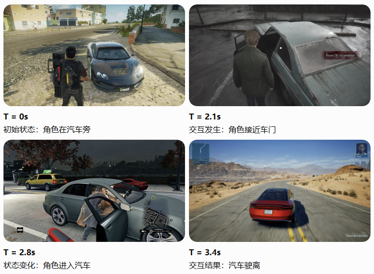
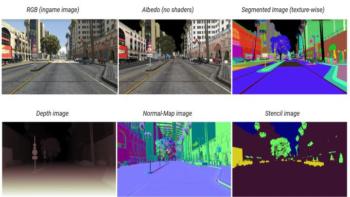
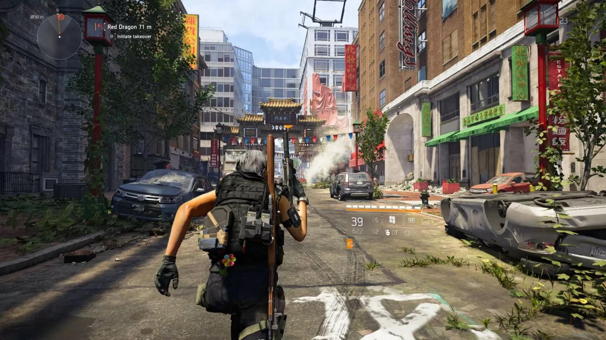
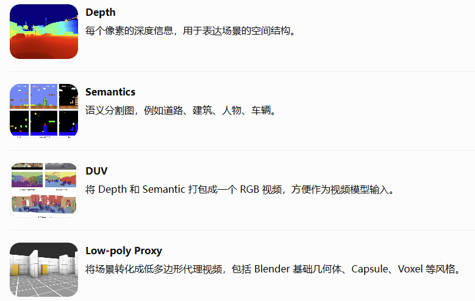
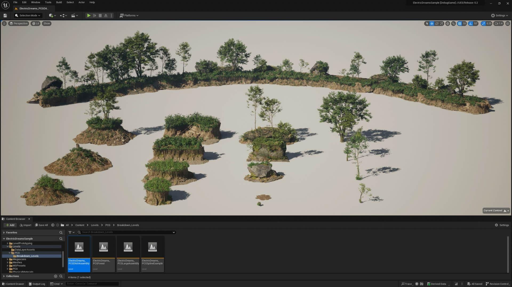
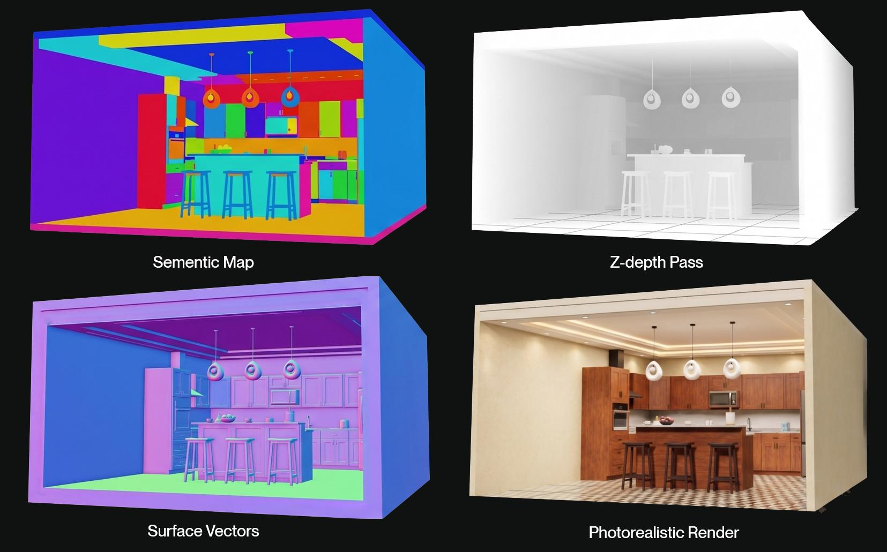
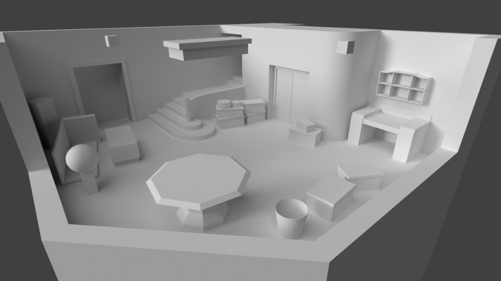
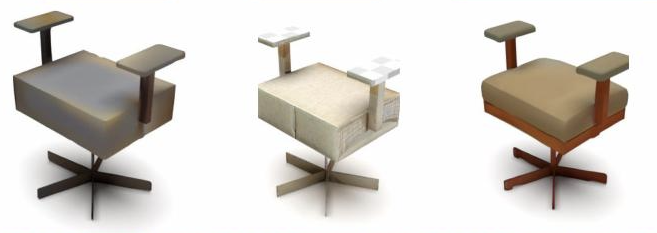

讨论的核心问题：如何把普通游戏视频转化为能够训练世界模型理解空间、角色和精细交互的数据？
论文提出了 GameWM 的游戏架构，未来的游戏不必依赖传统游戏引擎渲染，也不是交给视频生成模型，而是集两者之所长。
GameWM Engine：负责确定性、可计算、可复现的内容
World State：世界状态
Game Rules：游戏规则
Camera：相机位姿与运动
Layout：场景布局
Collision：碰撞与物理
Event Log：事件
GameWM VM：负责昂贵、复杂、生成的内容
Appearance：外观
Animation：角色动作
Interaction Detail：交互细节
VFX：特效
过去很多世界模型数据集以 Exploration 为中心，模型从中学习：角色和镜头在哪里、场景如何演化；但这些数据不足以教会模型理解精细交互——移动是时空问题，而交互还涉及物体之间的关系、动作过程和事件结果。
以角色开门上车为例，同时记录了：World State：角色、汽车、环境的初始状态、Action：玩家输入及其触发的交互、Event：上车、关门、汽车驶离等关键事件及发生时间、Outcome：交互完成后的世界状态。

GameWM 的数据采集以交互事件为中心进行切片和标注。
论文提到的Interaction-Centric Data Engine，是将不同来源的视频统一转换为结构化 Proxy，再生成多样化 Target。

从游戏引擎 Buffer 获取 RGB 视频、Depth Buffer、Semantic Segmentation、Player State、Event Tags、Object Transform...准确性高，因而是优先级最高的数据获取方式。

对游戏录屏使用视觉模型提取：Monocular Depth Estimation（单目深度估计）、Semantic Segmentation（语义分割）、VLM（交互事件识别）、Object Tracking（物体跟踪）
论文用了 GTA V、CARLA、Magpie 和 ABot-World 等游戏作为数据来源
将输入模型的 Proxy 分为四种：Depth、Semantics和DUV为基础 Proxy，可通过基础 Proxy 进一步生成 Lowpoly Proxy

利用视频生成模型 H3 的 Ref2VA 模式重新生成视频，使同一个 Proxy 生成多个视觉风格的 Target
给出了一个具体例子：
3 种基础 Proxy：DUV、Depth、Semantics
4 种 Low-poly Proxy
4 个高质量 Target
可以生成 (3 + 4) * 4 = 28 组 Proxy - Target 配对，还有 7 组原始录屏作为监督目标
参考论文，我认为提高数据质量、采集效率的重点可以放三个方面：
高效生产： 如何批量获得大量具有明确语义的交互事件。
结构化标注： 如何让每段视频同时具备动作、空间、物体和时间信息。
质量控制： 如何确保视频、Proxy、动作标签和真实交互结果之间严格对齐。
建立参数化场景库和标准化交互任务库。

场景：用 PCG 生成参数化的场景，通过参数随机、分层采样、组合覆盖等方法提高场景丰富度。
交互：将交互定义为具有明确前置条件和结果状态的模板，比如 OpenDoor 这个交互模板，不关心具体是哪扇门，只规定角色接近门的目标、播放开门动画、门旋转、角色通过门口，可以在不同门、不同角色、不同场景中复用。
利用 UE 的 SceneCaptureComponent、Render Target 和 Actor 状态接口，同步导出：RGB（场景视觉信息）、Depth（逐像素深度）、Semantic （语义类别）、Camera（相机内外参及运动轨迹）、Pose（物体位姿）、Action（玩家输入）、Event（交互事件）

直接获得逐帧对齐的多模态 Ground Truth。
分为基础 Proxy：Depth Proxy、Semantic Proxy、DUV Proxy（深度与语义的联合编码）和Geometry Proxy（几何表达，Lowpoly、Capsule、Primitive、Voxel 四种低模）
基础 Proxy 可由引擎生成，Geometry Proxy 除了 3D Reconstruction，还可用视频生成模型（论文中的方法）。

引入视频生成模型，扩展视觉表现，扩展维度有：外观（材质、纹理）、光照、风格（写实、卡通）、天气氛围等。视觉多样性扩充只是换皮，不能破坏 Proxy 和 Target 的对应关系。

建议建立自动化数据质量评估体系，质量维度可以有完整性、空间准确性、时许一致性、语义准确性、视觉一致性、数据重复率等。
成熟的 AI 行为与交互系统：Behavior Tree / StateTree / EQS / NavMesh / Smart Objects，可以直接构建角色寻路、目标选择、环境感知和复杂交互
完整的动画生产与骨骼系统：Skeleton / IK Rig / IK Retargeter / Control Rig / Motion Warping，支持不同角色复用动画资产、骨骼重定向、程序化调整动作和运动轨迹
成熟的场景管理与资产组织体系：World Partition / Data Layers / Level Instances / Asset Manager，可以管理复杂场景、模块化关卡、资产依赖和不同场景配置
成熟的相机与多通道渲染系统：SceneCapture2D / Sequencer / Movie Render Queue / Custom Depth，可以控制相机轨迹、视角、焦距、曝光，并通过不同 Render Pass 获取多模态数据